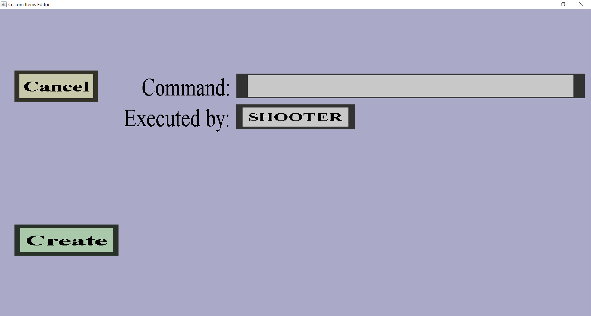

The command effect edit menu can be used to add a new command projectile effect or modify an existing one. It should look like this:
There is a 'Cancel' button, a 'Create' or 'Apply' button, an edit field for the command and a button to choose who will execute the command.
The button on the right of 'Executed by:' can be used to decide by who the command will be executed. The text of the button shows who is currently configured to execute the command, which is SHOOTER by default. You can change this by clicking on the button, which should take you to a small menu where you can choose the executor of the command.
The executor must be either the shooter of the projectile or the console. If you use the shooter, you need to make sure that all players have the right permissions to execute the command. If you choose the console, you might want to change the gamerules to disable the 'spam' in the console.